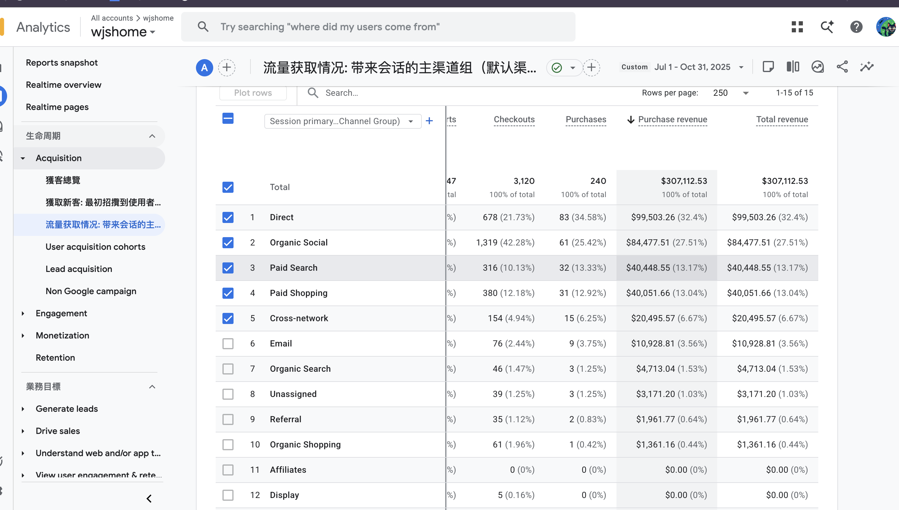
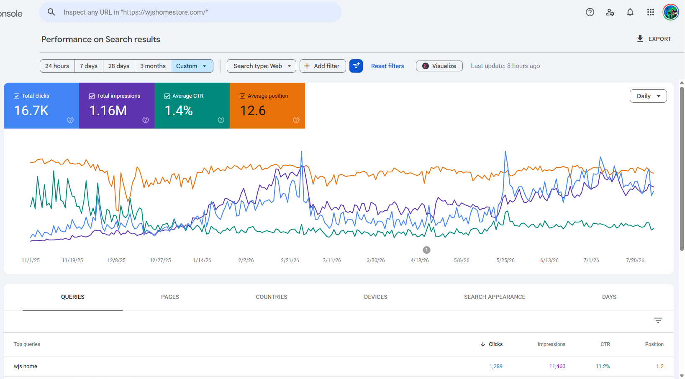
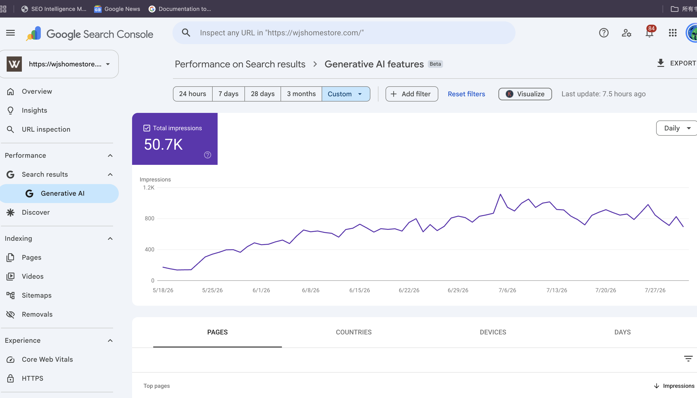
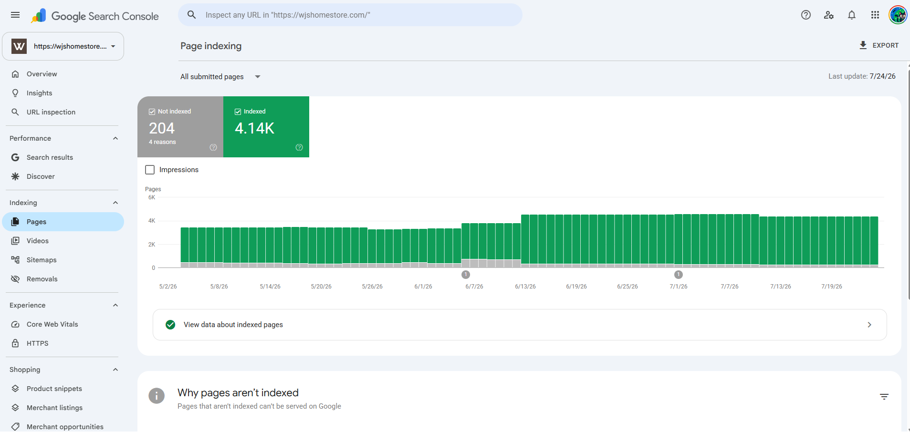

← 返回案例
E-commerce SEO
面向自然搜索收入和产品发现的电商 SEO 案例。
在 WJS Home 项目中，我作为该网站的专职 SEO 执行负责人，向一位直属主管汇报，并独立承担网站日常 SEO 落地工作，包括 Shopify 技术 SEO、内容优化、产品页与集合页增长、数据分析、开发协作、站外权威建设和实施 QA。
$260K+累计自然搜索营收（美元）
+133.5%近6个月自然搜索营收增长
16.7KGSC 搜索点击
1.16MGSC 搜索展示
策略与执行
- 以购买决策组织内容：根据消费者需求、购买顾虑和搜索意图，明确博客、购买指南、集合页与产品页的分工，通过主题集群和内链连接信息研究与产品发现。结合页面和技术优化，项目累计自然搜索营收超过26万美元，近6个月较前一等长周期增长133.5%。
- 让品牌故事进入关键页面：参与首页与 About Us 文案，将品牌定位、品牌故事和产品价值转化为面向消费者的英文表达，让品牌叙事与产品教育保持一致。
- 通过页面测试验证优化方向：优化集合页与产品页的关键词、标题、描述、文案、图片和内链，并尝试 A/B 测试，为后续内容及转化体验调整提供依据。
- 通过内容重构恢复搜索流量：结合 GSC 数据和受影响页面特征，识别主题重叠与页面定位问题，整合内容并补充权威资料和原创分析，使日均搜索点击在约三个月内从个位数恢复至约100次。
- 将技术诊断推进到上线验收：审计抓取、收录、Canonical、重定向、重复内容、Schema 与 Core Web Vitals，确定修复优先级并与开发人员协作落地。网站通过 Core Web Vitals 评估，LCP 为1.7秒、INP 为121毫秒、CLS 为0。
- 协调内容生产与站外建设：向自由撰稿人发布内容 Brief，跟进沟通与交付，并通过相关外链、短内容分发与数字公关内容，支持内容持续发布和站外权威建设。
累计自然搜索营收超过26万美元；近6个月营收较前一等长周期增长133.5%。







1 / 7